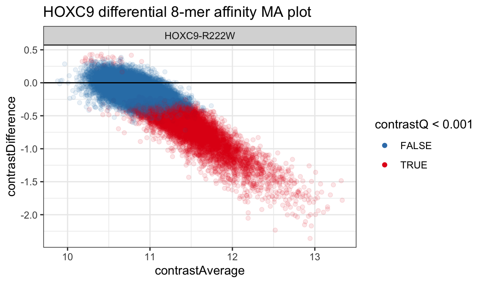

vignettes/upbm-quickstart.Rmd
upbm-quickstart.RmdAbstract
“Protein binding microarrays (PBMs) allow for the high-throughput quantification of DNA binding specificities of proteins, such as transcription factors, in vitro. While several probe designs have been proposed for PBMs, universal PBMs (uPBMs) designed to cover all 10-mer DNA sequences, have enjoyed the most wide-spread adoption. The upbm package provides tools and methods for organizing probe-level PBM data from raw GPR scan files, summarizing PBM data at K-mer resolution, and performing statistical inference when replicate experiments are available. The package was developed for the analysis of uPBMs and may not be appropriate for other PBM designs. upbm package version: 0.99.0”
While a large collection of methods and software packages have been developed for processing and analyzing traditional DNA microarrays, the development of tools for protein binding microarrays (PBMs) has been limited. PBMs and DNA microarrays measure fundamentally different things, with PBMs detecting protein-DNA interactions and DNA microarrays assaying nucleic acid hybridization. Blindly applying DNA microarray tools to PBM data can lead to problems.
This package provides tools and methods for reading, processing, and analyzing PBM data using standard Bioconductor data structures. The primary focus is on universal-design PBMs (uPBMs) which provide approximately uniform coverage of all 8-mer DNA sequences across probes on the array (Berger et al. 2006). The methods in this package have not been tested with other array designs.
suppressPackageStartupMessages(library("upbm"))In this quickstart guide, we demonstrate the basic functionality of the upbm package. More details on the individual steps for pre-processing and inference, as well as the specialized classes (PBMExperiment and PBMDesign) are provided in other vignettes (vignette("upbm-classes")).
The input to the upbm package is raw GenePix Results (GPR) data for Alexa488 and Cy3 scans. Functions for reading GPR data into R are included with this package (see vignette("upbm-classes")). For this quickstart guide, we will use just the Alexa488 scans for a PBM dataset included in the upbmData package. Details on how Cy3 scans can also be used provided in a separate vignette (see vignette("upbm-preprocessing")).
data(hoxc9alexa, package = "upbmData")The dataset includes PBM data for four allelic variants of the HOXC9 human TF (wild type, K195R, R193K, R222W). For simplicity, we will subset this data to scans at a single PMT gain (450) and keep just the wild type and R222W alleles.
alexa_subset <- hoxc9alexa[, colData(hoxc9alexa)$pmt == 450]
alexa_subset <- alexa_subset[, colData(alexa_subset)$condition %in%
c("HOXC9-REF", "HOXC9-R222W")]The data is stored as a PBMExperiment object, which extends the standard Bioconductor SummarizedExperiment class. Each sample is stored as a column, with rows corresponding to probes on the array.
## class: PBMExperiment
## dim: 62976 6
## metadata(0):
## assays(2): fore back
## rownames: NULL
## rowData names(4): Column Row probeID Sequence
## colnames(6): s4 s7 ... s33 s34
## colData names(10): date version ... condition id_idx
## probeCols(4): Column Row probeID Sequence
## probeFilter names(1): probeID
## probeTrim: 1 36Analysis of uPBM data is performed in three steps: sample pre-processing, 8-mer summarization, and 8-mer inference. First, samples are preprocessed using upbm::upbmPreprocess. This wrapper functions performs various pre-processing steps, including Cy3 normalization. In this quickstart, we will not be using Cy3 scans and instead set the cy3pe= option to NULL. We also silence verbose output here.
alexa_normed <- upbmPreprocess(pe = alexa_subset, cy3pe = NULL,
verbose = FALSE)The returned object is a PBMExperiment object with the same number of columns as the original PBMExperiment, with normalized probe intensities now stored in the normalized assay. Rows have been filtered to remove background and control probes.
## class: PBMExperiment
## dim: 41944 6
## metadata(0):
## assays(4): normalized fore back spatialbias
## rownames: NULL
## rowData names(4): Column Row probeID Sequence
## colnames(6): s4 s7 ... s33 s34
## colData names(13): date version ... acrossRepMultScale
## acrossRepAddScale
## probeCols(4): Column Row probeID Sequence
## probeFilter names(0):
## probeTrim: 1 36After normalization, probe-level intensities are aggregated across replicates by fitting a probe-level model to the data. Since the dataset includes samples for different conditions, this must be specified. In our dataset, this information is included in the "condition" column of the colData of the PBMExperiment. This is passed to the stratify= parameter.
alexa_pfit <- probeFit(alexa_normed, stratify = "condition")The resulting object is a PBMExperiment with the same number of rows, but only one column for each unique value in the column specified by stratify=. In this case, we have two conditions, HOXC9-REF and HOXC9-R222W. Aggregated probe summaries are stored in the beta assay.
## class: PBMExperiment
## dim: 41944 2
## metadata(0):
## assays(3): beta sd df
## rownames: NULL
## rowData names(4): Column Row probeID Sequence
## colnames(2): HOXC9-R222W HOXC9-REF
## colData names(0):
## probeCols(4): Column Row probeID Sequence
## probeFilter names(0):
## probeTrim: 1 36Next, probe-level summaries are used to obtain 8-mer-level summaries. A helper function, upbm::uniqueKmers is provided for generating the full set of K-mers of a specified length (unique to reverse complementation). During this step, parameters are also estimated for downstream differential testing and inference. The baseline condition must be specified to the baseline= parameter.
alexa_kfit <- kmerFit(alexa_pfit, kmers = uniqueKmers(8L),
baseline = "HOXC9-REF")The result is a SummarizedExperiment with K-mer-level affinity and variance estimates for each condition, with rows now corresponding to K-mers rather than probes.
## class: SummarizedExperiment
## dim: 32896 2
## metadata(1): baseline
## assays(5): affinityEstimate affinityVariance contrastDifference
## contrastAverage contrastVariance
## rownames: NULL
## rowData names(1): seq
## colnames(2): HOXC9-R222W HOXC9-REF
## colData names(0):To test for differential 8-mer affinity across conditions between a baseline condition (e.g. the wild type HOXC9 TF) and all other conditions, we make a call to upbm::kmerTestContrast. Other methods for inference are also defined in upbm::kmerTestAffinity and upbm::kmerTestSpecificity. Note that all differential affinity and specificity calls are relative to the baseline condition specified above.
alexa_kdiff <- kmerTestContrast(alexa_kfit)The resulting object is again a SummarizedExperiment with assays containing the results of differential affinity testing.
## class: SummarizedExperiment
## dim: 32896 2
## metadata(0):
## assays(6): contrastAverage contrastDifference ... contrastP
## contrastQ
## rownames: NULL
## rowData names(1): seq
## colnames(2): HOXC9-R222W HOXC9-REF
## colData names(0):K-mer level averages and differences between the baseline and all other conditions are included in the contrastAverage and contrastDifference assays. FDR-adjusted p-values are included in the contrastQ assay. We can tidy the results from a PBMExperiment to a tibble using the broom::tidy function.
diffdat <- broom::tidy(alexa_kdiff, assay = c("contrastAverage",
"contrastDifference",
"contrastQ"))
diffdat <- dplyr::filter(diffdat, !is.na(contrastAverage))
diffdat## # A tibble: 32,896 x 5
## seq cname contrastAverage contrastDifference contrastQ
## <chr> <chr> <dbl> <dbl> <dbl>
## 1 AAAAAAAA HOXC9-R222W 11.5 -0.340 0.00485
## 2 AAAAAAAC HOXC9-R222W 11.4 -0.405 0.00322
## 3 AAAAAAAG HOXC9-R222W 11.3 -0.0669 0.578
## 4 AAAAAAAT HOXC9-R222W 11.6 -0.418 0.000297
## 5 AAAAAACA HOXC9-R222W 11.4 -0.350 0.0232
## 6 AAAAAACC HOXC9-R222W 11.3 -0.257 0.0791
## 7 AAAAAACG HOXC9-R222W 11.5 -0.559 0.00000616
## 8 AAAAAACT HOXC9-R222W 11.2 -0.0980 0.391
## 9 AAAAAAGA HOXC9-R222W 11.4 -0.412 0.00108
## 10 AAAAAAGC HOXC9-R222W 11.2 -0.0273 0.853
## # … with 32,886 more rowsAssays are now contained in columns with rows corresponding to single samples and rows from the PBMExperiment. The tidy function can be used with any of the PBMExperiment objects above. More details are provided in vignette("other-tidydata"). Using the tidy data, plot the results of differential testing is now relatively straightforward. We can create a standard MA plot by plotting the contrastAverage and contrastDifference columns as the X and Y axes.
suppressPackageStartupMessages(library("ggplot2"))
ggplot(diffdat, aes(x = contrastAverage,
y = contrastDifference,
color = contrastQ < 0.001)) +
geom_point(alpha = 1/10) +
geom_hline(yintercept = 0) +
scale_color_brewer(palette = "Set1", direction = -1) +
theme_bw() +
guides(color = guide_legend(override.aes = list(alpha = 1))) +
facet_grid(. ~ cname) +
ggtitle("HOXC9 differential 8-mer affinity MA plot")
Additionally, we can also take a look at the distribution of 8-mer-level differential affinities between conditions.
ggplot(diffdat, aes(x = contrastDifference,
fill = contrastQ < 0.001)) +
geom_histogram(color = 'black', binwidth = .05, boundary = 0) +
geom_vline(xintercept = 0) +
scale_fill_brewer(palette = "Set1", direction = -1) +
theme_bw() +
guides(color = guide_legend(override.aes = list(alpha = 1))) +
facet_grid(. ~ cname) +
ggtitle("HOXC9 differential 8-mer-level affinity")Using the tabular data, we can also identify the set of 8-mers with largest differences between the two conditions.
suppressPackageStartupMessages(library("dplyr"))
diffdat %>%
dplyr::top_n(10, abs(contrastDifference)) %>%
dplyr::arrange(contrastDifference) %>%
dplyr::select(cname, seq, contrastDifference, contrastQ)## # A tibble: 10 x 4
## cname seq contrastDifference contrastQ
## <chr> <chr> <dbl> <dbl>
## 1 HOXC9-R222W GTCGTAAA -2.36 1.74e-195
## 2 HOXC9-R222W GTCGTTAA -2.23 5.70e-129
## 3 HOXC9-R222W GTCATTAA -2.17 1.50e-197
## 4 HOXC9-R222W GTAATTAC -2.15 1.87e-119
## 5 HOXC9-R222W GGTAATTA -2.11 0.
## 6 HOXC9-R222W GGTCGTTA -2.05 1.30e- 90
## 7 HOXC9-R222W GCCATTAA -2.04 6.42e-152
## 8 HOXC9-R222W CCATTAAA -2.02 2.65e-116
## 9 HOXC9-R222W CCCATTAA -2.01 9.13e-152
## 10 HOXC9-R222W ATCGTAAA -2.00 2.06e-141More details on various components of the package are provided in several other vignettes included with the package.
vignette("upbm-classes"): Details on the two uPBM classes defined in the package.vignette("analysis-preprocessing"): Details on the pre-processing procedures.vignette("analysis-summarization"): Details on the steps for summarizing probes to 8-mers.vignette("analysis-inference"): Details on the various K-mer-level inference procedures.vignette("other-qcplots"): Details on various QC plots useful when evaluating the quality of PBM data.vignette("other-tidydata"): Details on how data can be tidied from PBMExperiment to tibble format.